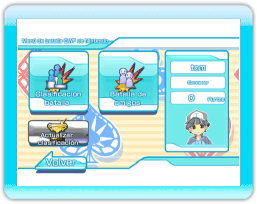

11 |
Menú de Batalla CWF de Nintendo |
 |

Si eliges "Batalla CWF de Nintendo" en el "Menú CWF de Nintendo", aparecerá el "Menú de batalla CWF de Nintendo".
Elige "Clasificación de batallas", escoge fase y cartas y busca un oponente. Si no logras reunir a 4 personas, la CPU las sustituirá. ※En la "Clasificación de batallas" obtendrás puntos según tu puesto.
Primer puesto: 10 puntos Segundo puesto: 5 puntos Tercer puesto: 2 puntos Cuarto puesto: -2 puntos Si logras más puntos, puedes obtener títulos y objetos. ※Tras comenzar la partida, si un jugador abandona en mitad de ella, perderá 4 puntos. Así que cuidado.
Si no logras reunir a 4 personas, la CPU las sustituirá. ※Si eliges "Batalla de amigos", irás a la opción "Menú batalla de amigos".
|
 |
 |
 |